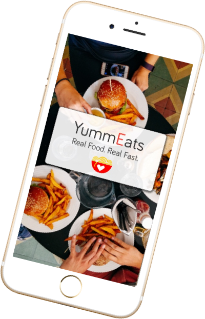
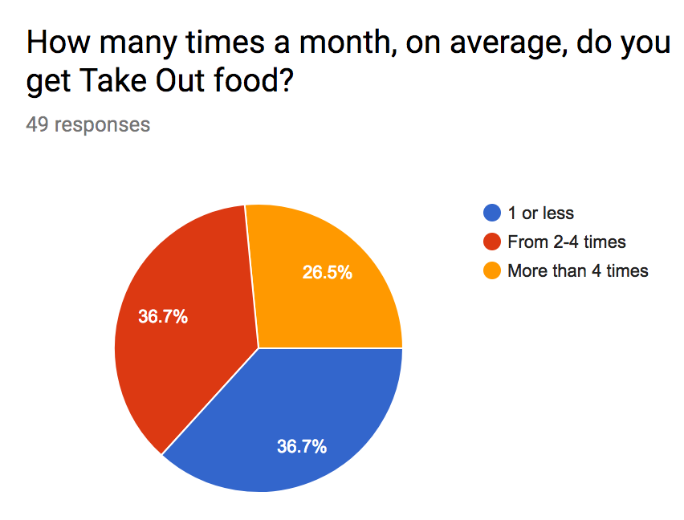
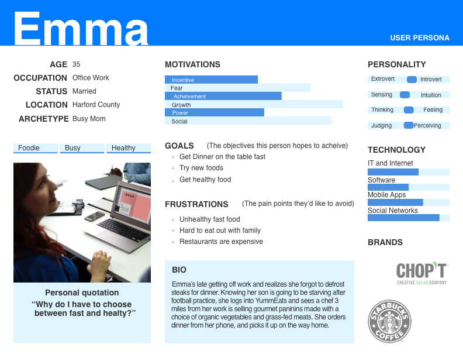
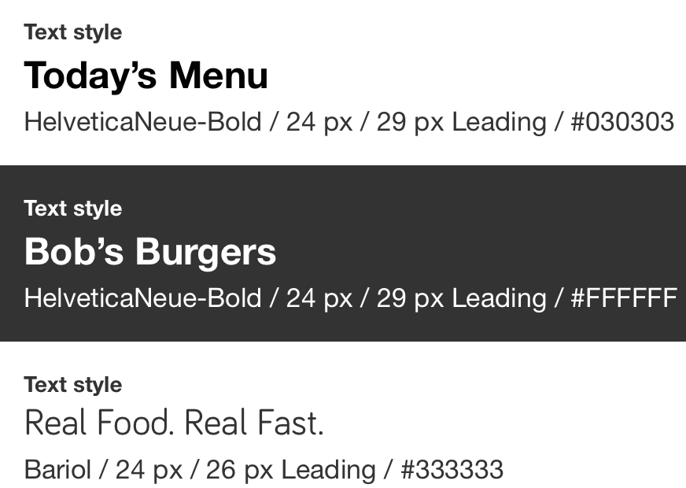
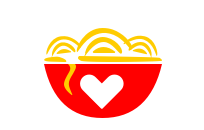
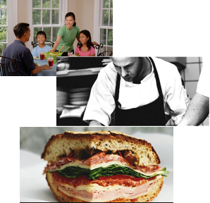
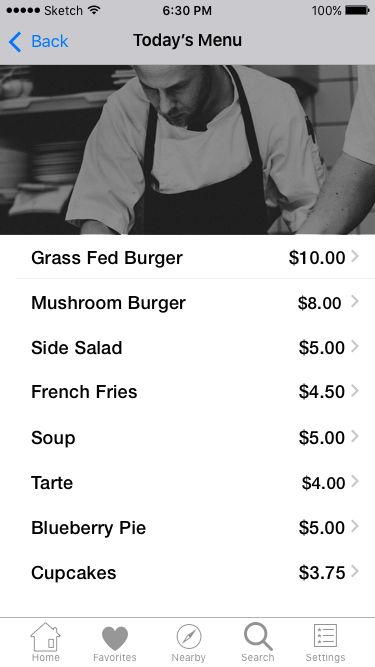

Bring the Sharing Economy of Airbnb and Uber to Takeout
I was asked to develop the design for and iOS application that would not just look good, but be usable, engender trust, and promote the growth of a virtually unknown business model for takeout food.
Case Background
The sharing economy is estimated to grow from $14 billion in 2014 to $335 billion by 2025.”1 The digital technology that created platforms to get a cheaper ride or a place to stay is ready to be adopted by other segments of the economy. In 2016, 52% of Americans ordered take-out from several times a month or more.2
A robust meal-sharing application is the ideal platform to bring busy consumers a variety of cuisines prepared by home-based chefs.
Methodology
User research was developed to learn the following:
The frequency of take-out purchases
How consumers choose where they get there take-out food
Comfort level with mobile technology
Prior knowledge of mealsharing
Willingness to utilize a new platform
Perceived obstacles to acceptance and use
After completing this research, personas were developed to drive empathetic design and understanding of the typical potential user’s needs.
Competivite analysis was undertaken to understand the approach and focus of business that represent early entries to the market.
The design and branding was then developed and tested based on these inputs.

YummEats
Baltimore, Maryland
Research
27% of respondents get takeout more than 4 times a month
37% of respondents get takeout 2-4 times per month
Almost half of respondents pick up food from their establishment of choice (vs. delivery or drive-through)
22% choose where to get takeout based on current location
85% of respondents had not heard of mealsharing
85% of respondents would either definitely use or consider using mealsharing
100% of respondents responded that they have a high comfort level with mobile technology
85% of respondents were female


Design Decisions
Fonts
Helvetica Neue was selected as a the primary text font for readability and familiarty.
Bariol was selected for the logo for its mix of a professional yet friendly feel.

Branding
Red was choosen as the main logo color for its traditional associations with food and emotion.

Photography
A conscious effort was made to portray the YummEats customer, as well as portraying a chef in a profile, in order to build human connections and community.
In addition, quality food photography is featured.

User Testing
The initial button color for food options, black, was judged too harsh next to the food. A more harmonius color with adequate contrast was selected.
A/B testing was used to identify improvements to the logo; as a result, an attempt to portray a hot bowl of food with steam was rejected for a cleaner approach.
An early attempt to portray more information about a chef’s menu before entering the order workflow was rejected as creating unnecessary clicks. The flow was revised to speed up ordering.

Lessons Learned
This project highlighted the difference between UI and UX. I designed screens that looked good-but a customer would abandon because I was asking them to take too many steps to complete a task. That is an important lesson.
Additionally, this project gave me the opportunity to think about prototyping and testing in a different way. It was important to spend time interacting with other restaurant sites on my phone and think about user flows in greater detail.
For a future learning goal, I identified working with vertical scale in my typography so that I could develop better rhythm in developing a design system.